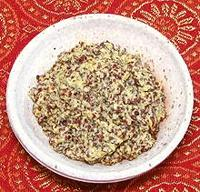

 |
Mustard Paste, BengaliIndia - Bengal - Shorshe Bata | ||||
| Makes: Effort: Sched: DoAhead: |
*** hrs Yes |
Traditionally this paste is ground with a Sil and Batta, similar to the Mexican Metate y Mano (Aztec blender). Unfortunately the fine texture produced by this method cannot be exactly duplicated with common household machinery. | |||
|
1/3 2 1/2 3 |
c t T |
Mustard Seed (1) Chili, green (2) Salt Water |
Revised Traditional Method
|
|
1/4 2 1/2 |
c t |
Dijon Mustard (3) Chili, green (2) Salt |
Quick Method #1Not as good as the traditional method, but acceptable if you are in a hurry.
|
|
1/4 2 1 1 6 |
c in t T |
Mustard Powder (4) Chili, green Ginger root Salt Water |
Quick Method #2This is a new method being used since mustard powder is now a common item in Bengal.
|